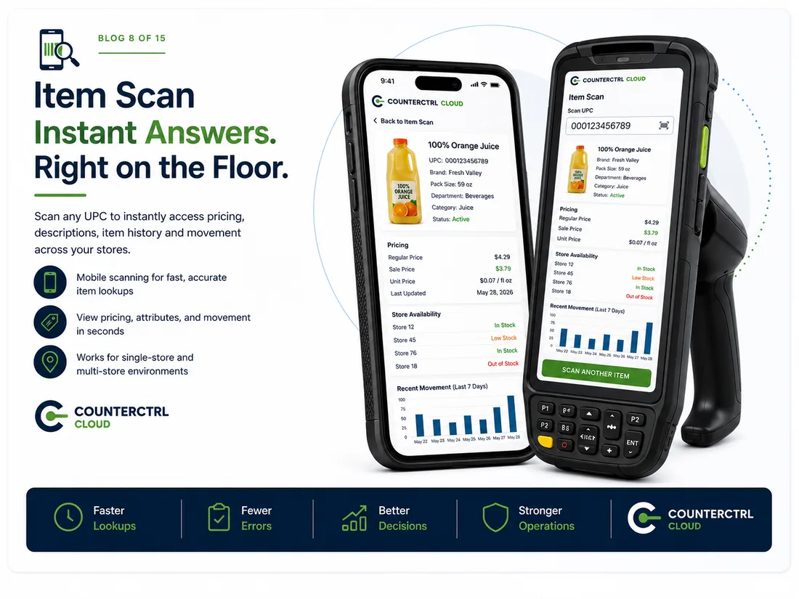

To simplify retail operations by transforming data into actionable intelligence that helps our customers make better decisions every day.
What is CounterCtrl Cloud?
Transaction data, turned into a short list worth looking at.
Your sales come in overnight. CounterCtrl reads them, compares every location, category and item to last week and last year, and hands your team the handful of numbers that actually need attention.
All in one placeReady by morningDown to the item
What you can do with it
Four questions a week, answered four ways.
Sales and performance against last week and last year. Loss prevention scored on each location's own baseline. Margin decliners ranked by points lost. Any list of items, trended and exportable.
SalesLoss preventionMarginItems
How it grades
The problems find you, not the other way around.
Every location, category and item is scored against a threshold you control. Anything outside it rises to the top, so nobody reads a forty-page report looking for the one line that matters.
CriticalWatchOK
How far it goes
From the whole week to a single receipt.
Start wide and keep going. Every view drills to the next level without a new report, a new export or a call to IT — and whatever you land on can be sent to the person who needs it.
WeekDayLocationCategoryItem
Who it's for
If your registers produce data, it's worth reading.
Built for operators running more than one location, and for the people who work the numbers — store and district managers, merchandising, loss prevention, marketing and the front office.
Reading about it only goes so far — ask your DCR contact for a walkthrough.
About us
Built with operators, not delivered to them.
CounterCtrl Cloud is made by DCR POS, a Data Enterprises company, alongside the regional grocery and retail operators who use it every morning. It came out of years inside back offices and point of sale — not a whiteboard.
Let data leadKeep it simpleCustomer first

From the blog · Module spotlight
Item Scan. Instant answers, right on the floor.
Scan any UPC and get pricing, attributes, store availability and recent movement back in seconds — on a phone or a handheld, in one store or across all of them.